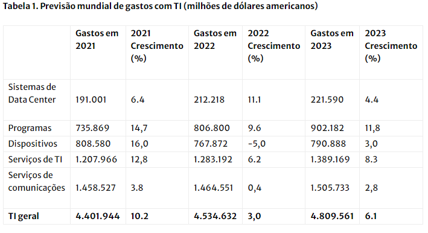

Gartner prevê que gastos mundiais de TI crescerão 3% em 2022
Mercado de TI
Os gastos mundiais com TI devem totalizar US$ 4,5 trilhões em 2022, um aumento de 3% em relação a 2021,
de acordo com a última previsão do Gartner, Inc. Embora os gastos com TI devam crescer em 2022, serão em
um ritmo muito mais lento do que 2021 devido aos cortes de gastos em PCs, tablets e impressoras por parte
dos consumidores, fazendo com que os gastos com dispositivos diminuíssem 5%.
" A inflação é uma preocupação de todos. Os bancos centrais de todo o mundo estão se concentrando no combate
à inflação, com a expectativa de que as taxas gerais de inflação sejam reduzidas até o final de 2023. No entanto,
os níveis atuais de volatilidade observados tanto na inflação quanto nas taxas de câmbio não devem impedir os planos
de investimento dos CIOs para 2022", disse John-David Lovelock , distinto vice-presidente de pesquisa do Gartner.
"Organizações que não investem no curto prazo provavelmente ficarão para trás no médio prazo e correm o risco de não
existir no longo prazo."
Os aumentos de preços e a incerteza de entrega, exacerbados pela invasão russa da Ucrânia , aceleraram a
transição na preferência de compra entre CIOs e empresas em geral, de propriedade para serviço – elevando os
gastos com nuvem para um crescimento de 18,4% em 2021 e um crescimento esperado de 22,1% em 2022. A demanda
por serviços em nuvem não apenas está remodelando o setor de serviços de TI, mas também está levando os gastos
com servidores a um crescimento de 16,6% em 2022, à medida que os hiperescaladores constroem seus data centers.
Prevê-se que os gastos com sistemas de data center experimentem o crescimento mais forte de todos os
Falta de profissionais capacitados está afetando os gastos de TI
Espera-se que a escassez crítica de habilidades de TI sentida em todo o mundo diminua até o final de 2023,
O mercado de trabalho de TI continua apertado, dificultando a atração e retenção de talentos.
Ver tudo...
segmentos em 2022, com 11,1%. A consultoria e implementação de nuvem e serviços gerenciados em nuvem
devem crescer 17,2% em 2022, de US$ 217 bilhões em 2021 para US$ 255 bilhões em 2022, ajudando a
impulsionar o segmento geral de serviços de TI para um crescimento de 6,2% em 2022.
(Consulte a Tabela 1)

quando o esforço corporativo para concluir as transformações digitais diminuir e houver tempo para requalificação
e requalificação da equipe existente. No entanto, no curto prazo, os CIOs serão forçados a tomar medidas para equilibrar
o aumento da demanda de TI e a diminuição dos níveis de pessoal de TI.
A Pesquisa Global de Mercado de Trabalho da Gartner com quase 18.000 funcionários no primeiro trimestre de 2022 mostrou que
a remuneração é o principal fator de atração e retenção de talentos de TI. Os provedores de serviços de tecnologia estão
aumentando os preços de TI para permitir salários competitivos. Isso está impulsionando um aumento nos gastos em software e
serviços até 2022 e 2023. Os gastos mundiais com software devem crescer 9,6%, para US$ 806,8 bilhões em 2022, e os gastos globais
em serviços de TI devem chegar a US$ 1,3 trilhão.
"Além disso, os CIOs estão usando mais serviços de TI para ajudar na falta de uma equipe de TI qualificada.
Tarefas que exigem conjuntos de habilidades menores tendem a ser terceirizadas para empresas de serviços
gerenciados para aliviar o tempo da equipe, enquanto o trabalho de estratégia crítica, que exige habilidades
de ponta inatingíveis por muitas empresas, será cada vez mais realizado por consultores externos", disse Lovelock.